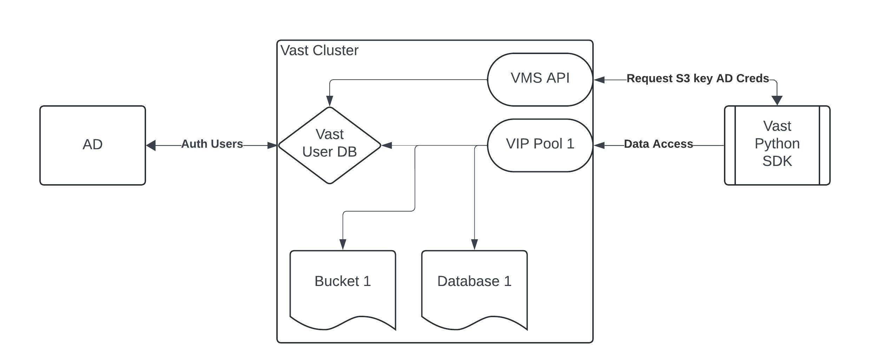

Secure Deployment Pattern#
High Level Design
Requirements and caveats
Database Setup
User request S3 keys using s3keys api
Bucket Configuration
Identity Policy - Configuration
Example Python code
This page is to help define a secure environment to allow multiple users to consume Vast Database and S3 buckets using python.
High Level Design#

Requirements and caveats#
This design requires the Auth source for users to be within Active Directory. There seems to be a requirement on the s3keys API for AD auth users only.
For this example we will show steps using Vast Database only. Standard S3 buckets will be similar but the sub bucket security may be limited by the file type used i.e. parquet, Delta lake etc.
End users must have access to the VMS API to request the S3 keys for a given AD user.
There is no Row or Column security here, just schema and table security. This will be until Vast implements row and column security on the database.
There is limited management tools to administer and review the following security. Further work is required here. Database Setup For this example we will have a Database owner who creates the Database/View/Schemas and configures the identity policy for the two users to consume Schema 1 and Schema 2
User request S3 keys using s3keys api#
Caveats
User has to have an AD account, does not work against local vast users
Each user can only have 2 access/secret keys. Once limit is reached a user can delete one of their existing access/secret keys before requesting a new access/secret key.
Integration into python code should be done in a custom function but not covered here.
There is no expiry time limits on Vast S3 keys atm.
Further requirement for GUI front end to this s3keys function could be a good idea generate s3 keys against AD account.
curl -u "leon:vastdata" -X POST https://10.143.11.204/api/s3keys/ -k
{“access_key”:”theaccesskey”,”secret_key”:”thesecretkey”}
When you try to get a third key
$ curl -u "leon:vastdata" -X POST https://10.143.11.204/api/s3keys/ -k
{“detail”:”A user cannot have more than two access keys”}
Delete a key
curl -u "vms_ad_user:vastdata" -X DELETE https://<VMS_VIP>/api/s3keys/ \
-d '{"access_key":"<ACCESS_KEY>"}' -k \
-H "accept: application/json" -H "Content-Type: application/json"
Bucket Configuration#
A simple Vast Data base View
Owner is a local user to the cluster. Could also be a AD user if required. Please note this use does not have access to the data
Local user
Simple View policy for the database.
Create two schemas in the the vastdbsec database
Identity Policy - Configuration#
The following identity policy is designed to give an AD user or group full access to the department_a schema within the vastdbsec database. This user or group will not be able to access the department_b schema although he will know of its existence when listing schemas.
Please note the following :-
HeadBucket is required on the vastdbsec bucket.
TabularListSchemas is required on the vastdbsec bucket.
TabularListTables and TabularCreateTable is required on both the root and all objects within a Schema i.e. vastdbsec/department_a and vastdbsec/department_a/*
{
"Id": "Policy1721818146435",
"Version": "2012-10-17",
"Statement": [
{
"Sid": "Stmt1",
"Action": [
"s3:HeadBucket"
],
"Effect": "Allow",
"Resource": "vastdbsec"
},
{
"Sid": "Stmt2",
"Action": [
"s3:TabularListSchemas"
],
"Effect": "Allow",
"Resource": "vastdbsec"
},
{
"Sid": "Stmt3",
"Action": [
"s3:TabularListTables",
"s3:TabularCreateTable"
],
"Effect": "Allow",
"Resource": "vastdbsec/department_a"
},
{
"Sid": "Stmt4",
"Action": [
"s3:TabularListTables",
"s3:TabularCreateTable"
],
"Effect": "Allow",
"Resource": "vastdbsec/department_a/*"
}
]
}
Example attached to a user called department_a
Example Python code#
This is only an example of how to in code get a access / secret key.
import os
import requests
from requests.auth import HTTPBasicAuth
# Retrieve environment variables -
vms_vip = os.getenv('VAST_VIP')
username = os.getenv('VAST_USERNAME')
password = os.getenv('VAST_PASSWORD')
if not all([vms_vip, username, password]):
raise ValueError("Missing one or more environment variables: VAST_VIP, VAST_USERNAME, VAST_PASSWORD")
# Endpoint for requesting S3 keys
url = f'https://{vms_vip}/api/s3keys/'
# Make the POST request to create a new S3 key
response = requests.post(url, auth=HTTPBasicAuth(username, password), verify=False)
# Check if the request was successful
if response.status_code == 200:
# Parse the JSON response
data = response.json()
access_key = data.get('access_key')
secret_key = data.get('secret_key')
# Print the access and secret keys
print(f'Access Key: {access_key}')
print(f'Secret Key: {secret_key}')
# These variables can now be used in your SDK code
else:
print(f'Failed to get S3 keys: {response.status_code} - {response.text}')